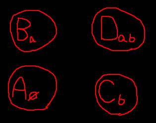

Nancy’s Guide to Dungeon Topology
Table of Contents
- What da heckie is dungeon topology?
- What da heckie is a dungeon?
- Dungeon states
- What da heckie is state?
- What da heckie a state variable?
- What da heckie is a side effect?
- What da heckie is a configuration?
- What da heckie is a state space?
- What da heckie is a state space diagram?
- What da heckie does a state space diagram haf ta do wif state variables?
- State space semantics and notation
- What da heckie are configuration classes?
- Dungeon topology
- TODO Analysis: Temple of Time (Twilight Princess)
- TODO Analysis of game mechanics
- TODO Dungeon generation
an assimilation of Dungeon Topology Notes !!
big wip!
What da heckie is dungeon topology?
It’s a way of analysing Zelda-style dungeons! :0
(It’s using state space diagrams of some sort to map out the progression of Zelda-style dungeons!)
What da heckie is a dungeon?
I’m not sure! XD I think it’s where you throw prisoners to rot or something. Just kidding! It’s actually like the dungeons in Zelda! Where there are enemies and puzzles and you have to navigate through all the dungeon puzzles to the boss! (Or something like that! 0_0)
More specifically, what gives a dungeon its identity? I claim it’s the following three things:
- the set of all possible dungeon configurations a dungeon can have at any given time
- the set of all possible meaningful actions the player can take in any one dungeon configuration that causes the dungeon to end up in a different configuration
- the dungeon’s topological template: the set of all possible paths the player can take from any one location in the dungeon to any other location in the dungeon as a function of the dungeon’s current state.
We’ll talk about all three of these things!
Dungeon states
What da heckie is state?
The first thing to note about a dungeon is that it has state. That means at any given time the configuration of the dungeon might be one thing or it might be another.
For example, a particular door might be locked or unlocked, a particular switch might be pressed or unpressed, a certain chest might have yet to be opened, or it might have already been opened, a particular enemy might have been defeated, or it might still be lurking.
Often the physical structure of the dungeon is dynamic too. Some passageways may or may not be accessible at any given time!
All of these particularities of the configuration of the dungeon at any point in time is called the dungeon’s current state.
What da heckie a state variable?
The state is controlled by a collection of variables called state variables. These are variables whose value can change over the course of progressing through the dungeon. The values of these variables determine or represent certain aspects of the current configuration of the dungeon.
For example, there could be a variable called defeated_miniboss which has the value of false until you have defeated the miniboss, after which it has the value of true! Further, maybe this variable also corresponds to whether a certain chest has appeared yet (such as chest that appears after the miniboss has been defeated).
A value of true or false is called a boolean value, and a variable that has a value of either true or false is called a boolean variable.
What da heckie is a side effect?
State variables generally change in response to meaningful actions of the player! An action that causes a change in a state variable is said to have a side effect. A side effect is a change in dungeon state that occurs as an external consequence to some action.
For example, if the player presses a switch, and suddenly a water wheel kicks into action, the action is the pressing of the switch, and the side effect is the activation of the water wheel.
More specifically, the action of pressing the switch has the side effect of changing a state variable, maybe one called water_wheel_activated!
What da heckie is a configuration?
At any given time, the dungeon’s state variables might have any number of possible combinations of values. The current combination of values makes up the current configuration of the dungeon.
For example, the player may have unlocked the door, but not activated the water wheel. Or the player may have unlocked the door and activated the water wheel. These are two distinct configurations of the dungeon.
In additon, the set of all possible actions that the player can take at any given time is dependant on the configuration at that time.
For example, suppose the switch to activate the water wheel is behind the locked door, and suppose the player hasn’t yet unlocked the door. In this configuration, the player doesn’t have the luxury to activate the water wheel just yet, but they may be able to unlock the door if they have a key! Now suppose the door has been unlocked. In this configuration, the player is able to activate the water wheel, an action that wasn’t available to them in the other configuration!
What da heckie is a state space?
The state space of the dungeon is like a map of all possible configurations. All the points in this space are unique configurations of the dungeon. Each point also has any number of paths from it to another point. These paths are the particular actions available to the player when the dungeon is in that configuration.
Just to give you a preview of next topic, here’s a simple state space diagram showing a dungeon progression from the start to getting a key to unlocking the door and exiting the dungeon:

(Note that it might be counterintuitive to think of the player’s possession of a key as an aspect of dungeon state. It might be more intuitive to think of it as player state, because it’s the player who either does or doesn’t possess the key at any given time. But for these purposes we’ll consider player state as a part of dungeon state. And so we’ll say that there is a dungeon configuration such that the player possesses the key and a separate dungeon configuration such that the player doesn’t possess the key.)
Here, you start the dungeon in the “S” configuration (S for start). From there your only meaningful action is to obtain the key, which puts you in the “K” configuration (K for key). Once you have the key, your only meaningful action is to unlock and exit the door, which puts you in the “D” configuration (D for door)!
What the state space diagram tells you at a glance is how many possible configurations of the dungeon there are and what sorts of routes you can take if you want to get from configuration A to configuration B.
What da heckie is a state space diagram?
As introduced above, a state space diagram is a visual depiction of the state space of a dungeon, including labeled circles representing all possible configurations as well as arrows between the circles representing the possible actions that get you from one configuration to another.
What da heckie does a state space diagram haf ta do wif state variables?
Recall that a dungeon configuration is determined by a particular unique combination of the dungeon’s state variables. In other words, a particular set of values per state variable denotes a particular dungeon configuration.
For example, suppose a dungeon has a big scary door and a water wheel. The big scary door can be either locked or unlocked, and the water wheel can be either active or inactive. This might naturally be represented in terms of the state variables big_scary_door_unlocked and water_wheel_active. When the variable big_scary_door_unlocked has value false, the big scary door is locked, and when it has value true, the big scary door is unlocked. When the variable water_wheel_active has value false, the water wheel is inactive, and when it has value true, the water wheel is active.
Quick detour!
How many possible dungeon configurations are there?
Notice that a boolean variable has two possible values: namely, true and false. Notice that a pair (group of two) of boolean variables has four possible combinations of values: namely, (true and true), (true and false), (false and true), and (false and false). That’s because the first one can be true and the second one can be true. Or the first one can be true and the second one can be false. Or the first one can be false and the second one can be true. Or they can both be false.
In general, if we have a collection of n boolean variables, the number of possible combinations of values for those variables is 2ⁿ. This checks out. If n = 1 then we have 2¹ = 2 possible values. If n = 2 then we have 2² = 4 possible values, which we just saw was the case. If n = 3 then we have 2³ = 8 and so on and so forth!
All of this is to say that the maximum number of possible dungeon configurations for a dungeon whose state variables have all boolean values, is always 2ⁿ, where n is the number of state variables the dungeon has.
(As a heads up, notice that this is only the maximum number of possible dungeon configurations considering only the number of state variables. In practice, not all possible combinations are obtainable given the possible sequences of actions available to the player, and thus the set of all possible dungeon configurations actually obtainable is smaller. But more about this later!)
State space diagrams show every possible configuration
Now we can see the more clearly note the correlation between state space diagrams and state space variables.
Suppose we have a dungeon with two state variables: a and b. Then we know there are four possible combinations of values for these two variables, and thus we know that there is a maximum of four possible dungeon configurations.
This is clearly depicted in the state space diagram for this dungeon. Every configuration shown on the state space diagram (of which there are four) corresponds to exactly one of the four possible combinations of state space variables. Sometimes we want to make explicit the variable combination that the configuration shown in the state space diagram corresponds to. To do this we can use subscripts on the labels:

Recall that we have two state variables, a and b, the values of which there are four possible combinations. Hence, four configurations are depicted in the diagram. The subscripts make explicit which combination of the values of variables a and b that configuration corresponds to. For example, configuration Dab is the configuration such that the values of a and b are both true. The configuration Cb is the configuration such that only the value of b is true. The configuration Ca is the configuration such that only the value of a is true. And lastly the configuration A_∅ is the configuration such that the value of none the variables is true (∅ denotes the empty set).
Notice that I didn’t draw any arrows on this diagram yet! That’s because the set of state variables alone doesn’t contain any information about the particular actions the player can perform in any given state. That is to say that the dungeon is more than just its collection of state variables: it’s also the possible paths between configuration states. A state space diagram is able to capture both of these aspects of the dungeon simultaneously. (And we’ll see later that a dungeon’s topology is also a key defining element.)
State space semantics and notation
TODO State space as a formal language
States
- Starting states
A starting state is a dungeon configuration the dungeon can have when the player firsts begins the dungeon.
We can visually depict a starting state in a state space diagram by writing an asterisk by the label. Additionally, we might want to label the state as “S”, for “start”:

Here we have a dungeon configuration labeled “S*_∅” or “S” for short. The * tells us that this is a configuration that the dungeon could be in when the player first enters the dungeon anew. The ∅ tells us that this configuration corresponds to the dungeon configuration such that all state variables have a value of
false.(Note that it’s not strictly necessary that all state variables have a value of
falsewhen the player begins a dungeon. For example, there may be a variable that corresponds to whether a water wheel is active and that this water wheel is active when the player first enters the dungeon.)Also note that it’s possible for a dungeon to have multiple starting states! But most will probably only have one.
- Solution states
A solution state is any possible dungeon configuration such that the the dungeon has been completed.
For example, the completion of the dungeon might correspond to having defeated the final boss of the dungeon. There might be a variable called
final_boss_defeatedthat has a value oftrueif and only if the final boss has been defeated. If we decide that the dungeon has been completed if and only if the final boss has been defeated, then this variable might as well have also been calleddungeon_completed, because by our definition of completion, it reflects exactly the same information. In any case, any dungeon configuration such that the value of this variable istrueis called a solution state.We can visually depict a solution state in a state space diagram by drawing a double circle, like this:
Here we have a dungeon configuration labeled “Ad” or “A” for short. The subscript d might stand for “defeated” as in a variable
final_boss_defeatedand tells us that in this configuration, the value of this variable istrue.Note that it’s also possible for a dungeon to have multiple solution states. Unlike as is the case with starting states, however, there most often will be multiple solution states.
Note also that it would technically be possible for a configuration to be both a starting state and a solution state at once. But this wouldn’t be very interesting, because the dungeon would be completed as soon as it began! XD
- Non-solution states
A non-solution state is any possible dungeon configuration such that the dungeon has not been completed. Simply put, every configuration that isn’t a solution state, is a non-solution state.
We visually depict a non-solution state by drawing a single circle, in contrast with the double circle depicting a solution state:
Here we have a non-solution state labeled “Z”. We know it’s not a solution state because there is only a single circle drawn around the label.
To be precise, it’s impossible for a configuration to be simultaneously a solution state and a non-solution state. This is because the set of solution states and the set of non-solution states are disjoint, meaning they are completely mutually exclusive: if an element is in one set, it is necessarily not in the other.
- Non-states
A non-state is any impossible dungeon configuration. That is, some combination of values for state variables that can never occur in the dungeon. The existence of non-states is the reason why the number of configurations in the state space diagram is usually less than the maximum number of possible configurations.
More specifically, what makes a dungeon configuration a non-state is that there are no possible sequences of actions the player can take from any starting state that results in the dungeon having that configuration.
Interestingly though, there may exist possible sequences of actions the player could take from any other non-state that could lead to a non-state. In other words, the only possible ways to get to a non-state are by starting from any other non-state.
Normally we don’t draw non-states in our state space diagrams because these are states that we are generally not interested in since the player can never reach them under normal circumstances (that is, without hacking!). However, we might want to draw them in order to make explicit that it is a non-state.
A non-state is easily seen as a configuration X such that there is no chain of arrows from any starting state to X. Observe the following state space diagram:

Here, S is a starting state (as depicted by the *); A and E are solution states (as depicted by the double circle); S, A, C, and G are states (that is, they aren’t non-states); and D, F, B, and E are non-states.
Notice that there are three islands in this state space: a first island consists of configurations S, A, C, G, and D; a second island consists of E and B; and a third island consists only of F.
Notice that A, C, and G are states. It’s easy to see why: there is a path from a starting state (S) to them: From S you can go directly to A, directly to C, and indirectly to G (by first going to C, and then to G). That is to say, to recall the definition of a non-state, that, in contrast to non-states, there is a possible sequence of actions the player can take from a starting state that results in that configuration. This is depicted as a chain of arrows from S to A, C, or G.
Notice also that S is also a state. This is less obvious, because there are no chains of arrows that begin with S and end with S. But the definition of a state states that a configuration is a state if and only if there exists a sequence of actions a player can take from any starting state to that configuration. And there is! Namely: the empty sequence. That is if the player is in S and takes the sequence of actions that consists of no actions the player will end up in S. Therefore S is not a non-state!
Notice that D is a non-state. Don’t be confused by the arrow that goes from D to S: they player can get to S from D, but, critically, the player can never get to D if they are in S. It’s impossible to get to D, and that’s what makes it a non-state.
B and E are both non-states. Don’t be confused that E is a solution state. It’s totally possible that a configuration is both a solution state and a non-state. It’s a non-state solution state! (Not to be confused with a non-solution state! XD)
Notice also that F is a non-state. It’s easy to see why. But notice also that it is on a separate island as the island containing S. And notice that non-states B and E are also on an island separate from S. More generally, notice that all states (non-non-states) are on an island containing a starting state. Notice that the coverse is not true: namely, it is false that all states on an island containing a starting state are states (non-non-states). D is an example of this: D is on a island containing a starting state, but D is not a state.
- Configuration v.s. state
Until now I have been trying to carefully avoid mixing up the words for configuration and state, but I haven’t explicitly stated why. XD The reason is that both states and non-states are configurations. There exists a configuration for every combination of values for state variables. Some of those combinations are obtainable and thus correspond to states, and the rest are unobtainable and thus correspond to non-states.
- Configuration v.s. state
TODO Actions
An action is anything that the player can do in one configuration that leads to a different configuration.
- TODO Action alphabet
In the state space diagrams, the actions are represented by the arrows drawn between the circles. We can label the arrows with single lowercase letters denoting a particular action.
The action alphabet for a dungeon is the set of all characters denoting all possible actions that exist in the dungeon.
TODO Action sequences
An action sequence is a sequence of actions the player can take that leads them from aa starting state to any valid dungeon configuration. We can denote an action sequence as a string of letters denoting actions.
What da heckie are configuration classes?
Sometimes it’s not a singular particular dungeon configuration you are interested in getting to, but a class of dungeon configurations, i.e., a configuration class. For example, suppose you want to unlock the big scary door. Suppose also that there is a switch that controls whether the water wheel is on or off. But the key to the big scary door is accessible regardless of the state of the water wheel. In other words, it doesn’t matter to you whether the water wheel is activated or not, you only care about whether the big scary door is unlocked. Thus what you care about is not a singular particular dungeon configuration, but rather the class of all dungeon configurations such that the big scary door is unlocked, which consists of at least two different dungeon configurations: one where the water wheel is activated, and one where the water wheel in not activated.

In this diagram, there are four configurations:
L- water wheel is inactive and big scary door is locked!
U- water wheel is inactive and big scary door is unlocked!
WL- water wheel is active and big scary door is locked!
WU- water wheel is active and big scary door is unlocked!
Since you only care about the configurations where the big scary door is unlocked, you care about the class of configurations consisting of WU and U! As you can see, among this class of configurations is the possibility of the water wheel being active and the possibility of it not being active. And that’s okay, because you don’t care about whether the water wheel is active!
Also notice the arrows. We are assuming that the switch that toggles the activation of the water wheel can be toggled to the player’s heart’s content, but that the big scary door, once unlocked, can never be locked back up. This is why you see mutual arrows going both forwards and bacwards between L and WL and between U and WU, but you only see rightwards arrows from L to U and from WL to WU.
Notice also that there’s no single action the player can take to simultaneously activate the water wheel and unlock the door. The diagram shows that the only two ways to get from L to WU is either first to activate the water wheel and then to unlock the door, or first to unlock the door and then to activate the water wheel.
Dungeon topology
A dungeon is similar to a maze in that from any point A to any point B there may be any number (possibly 0) of possible paths you can take. Unlike a maze though, which has fixed topology, a dungeon often has dynamic topology. In particular, this dynamism is due to the fact that the topology of the dungeon is a function of the dungeon’s state. In other words, the collection of sets for each location in the dungeon of all possible paths you can take from that location varies depending on the value of dungeon’s state variables.
For example, suppose you can only get from across a moat if the draw bridge is lowered. When the draw bridge is raised, there is no direct path from either side to the other. When the draw bridge is lowered, there is a path from either side to the other. That is to show that the topology is different depending on the status of the draw bridge.
Conditional topology
TODO The dungeon map
Consider the dungeon map. This shows the general physical layout of the dungeon, ignoring the specifics that vary.
Dungeon space
Notice that its possible for any point in the dungeon topology to be paired with multiple possible dungeon configurations. And notice that its possible for any point in the dungeon state space (i.e., every dungeon configuration) to be paired with multiple points in the dungeon topology. In other words, for every location you could be in the dungeon, there are typically multiple configurations that the dungeon could have. And conversely, for every configuration the dungeon could have, you could typically be in several different locations in the dungeon.
There’s another way to think about the topology of the dungeon. If we consider all of the pairs of topologically distinct location on the dungeon map with every possible configuration that the dungeon can be in when the payer is at that location, and if we consider the paths between these pairs such that each path represents either a physical movement of the player or an action (which has a side effect on the dungeon configuration), (or possible both simultaneously), then we end up with an unconditional and wholistic topological view of the dungeon. We will call this dungeon space.
Dungeon space is useful because it allows us to represent wholistically how the player is able to progress through the dungeon both in terms of dungeon state and in terms of physical movement of the player.